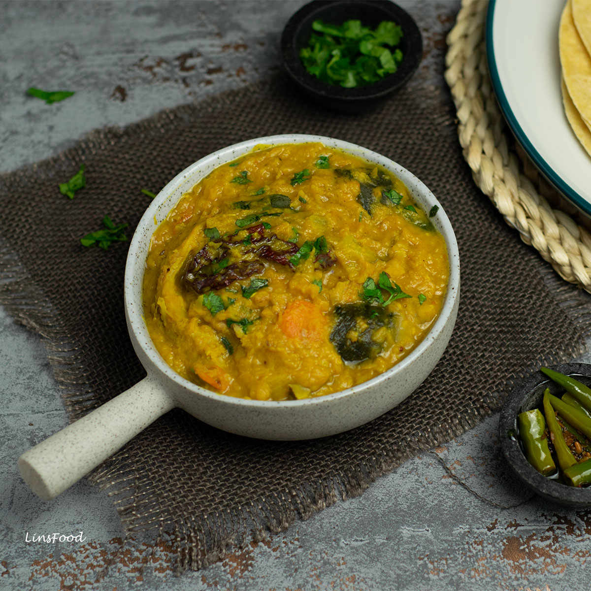

Veg Item's
Paneer Butter Masala
Paneer makhani (also called paneer butter masala) is an Indian dish of paneer, originating in New Delhi, in which the gravy is prepared usually with butter (makhan), tomatoes and cashews. Spices such as red chili powder and garam masala are also used to prepare this gravy.

Dalcha
Dalcha, is an Indian lentil-based stew originating from Hyderabad, Telangana, India. Its origins may lie with a similar middle eastern dish Harees which is more of a gruel with cooked meats. Primary ingredients are lentils, can be chana dal or sometimes tur dal.
